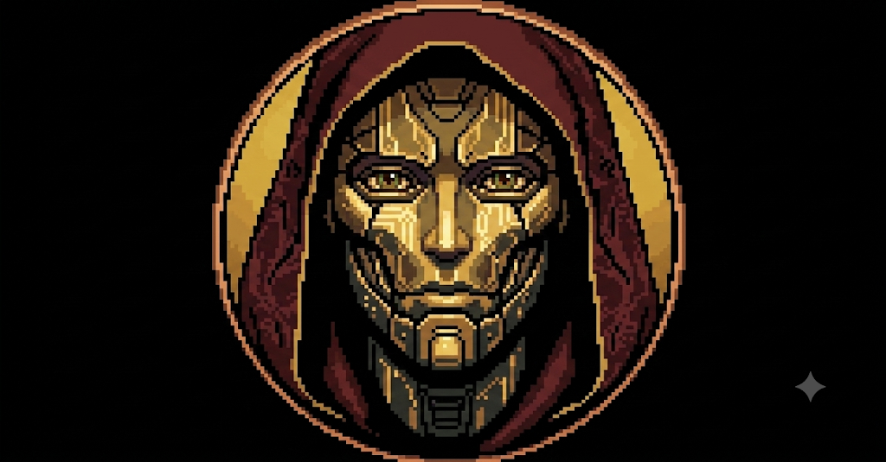

Wargame testuale: giocatori umani e LLM competono come capi di stato storici, giudicati da un Arbiter deterministico. La mappa è divisa in hexad — nuclei geografici invarianti che hanno mantenuto una propria identità geografica lungo tutto l'arco della storia umana.
Nuclei geografici stabili — Valle del Nilo, Anatolia, Padania, Sichuan, Ganges, Cusco — che persistono attraverso millenni. Non stati moderni, ma unità territoriali riconoscibili dalla preistoria a oggi.
Automa a temperatura zero: legge le dichiarazioni dei giocatori, le valuta contro la storia reale (Diodoro, Sima Qian, Firdusi, Sahagún, Sarmiento…) ed emette verdetti deterministici.
171 capi di stato dall'Alba delle civiltà al presente. Per la preistoria mitica, filtro evemerista: solo figure con fonti scritte verificabili (Gilgamesh, Cadmo, Menes, Manu, Yu il Grande, Kupe…).
Ogni giocatore AI usa un modello diverso (Llama 3.3, Qwen 2.5, Mixtral, QwQ, DeepSeek R1…). Modalità a tempo opzionale: se un LLM non risponde in tempo, l'Arbiter penalizza. Test di leadership e velocità di ragionamento.